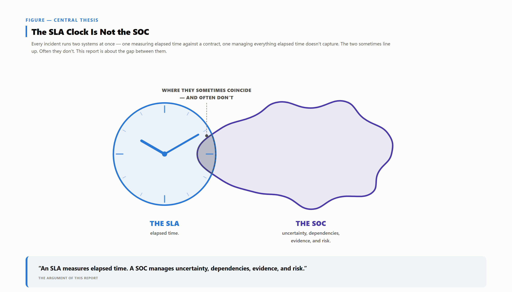

An SLA measures elapsed time; a SOC manages uncertainty, dependencies, and risk. Meeting the SLA doesn't mean the investigation was good; breaching it doesn't mean the SOC failed. That gap is a category error, not a rounding error.

The clock is precise; the cloud — complete telemetry, confirmed scope, corroborated evidence — is not.
Four claims underlie it:
A service-level agreement fixes when a timer starts, stops, and what duration is acceptable — a negotiated business term, not a technical constant. Every severity-to-duration figure in this paper is illustrative, not a universal standard — no accreditation body publishes a definitive number for "the" SOC SLA.
An analyst rarely has a complete picture: telemetry can be partial, scope isn't self-evident, and one indicator is a lead until corroborated. Closure often depends on someone the SOC doesn't manage. That isn't the SOC being slow — it's reducing uncertainty on a timeline others partially control.
Ordinarily the SLA and investigation quality move together, which is why the two get conflated; the divergence shows at the tails. A trivial alert can breach its window for administrative reasons; another can close inside its window because a corroborating log went unchecked — an investigation problem wearing a compliant clock.
Pull those three claims together and two outcomes fall out that a compliance percentage cannot tell apart.
SLA met, investigation poor. An analyst closes a P2 alert inside the window without pulling the telemetry that would have contextualized it. The report shows a compliant case; nobody found the actual exposure.
SLA breached, SOC did its job. A P1 alert stalls because containment needs a change-approval the customer's board hasn't granted, or a support queue is the only path to a forensic image. The clock runs; the analyst's work was correct.
A monthly percentage can't tell these two cases apart — both produce identical entries in an SLA-compliance column while saying nothing about which case reduced risk. This matters more now that detection and response often runs through an MDR or MSSP, so the relationship is defined by contract, not visibility into the investigation — a dynamic examined later in this paper.
The rest of the paper covers the SLA taxonomy and where it diverges from a real queue; ten case studies from real operating conditions; the operating model underneath both — gaming, quality measurement, pause-the-clock mechanics, OLA obligations, staffing — and a closing playbook for negotiating SLAs.